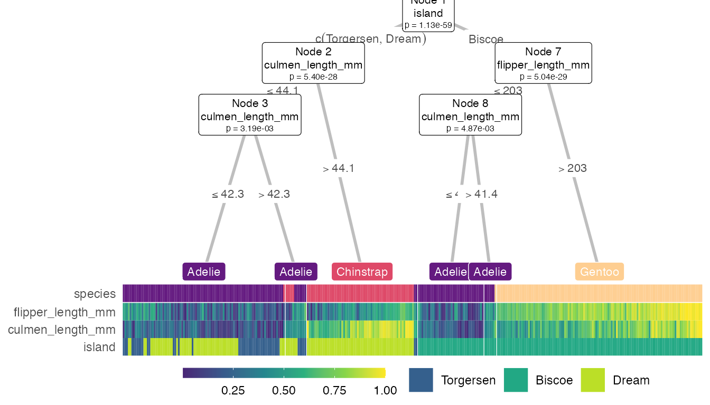

Explore treeheatr
Trang Le
2020-05-06
explore.Rmdtreeheatr displays a more interpretable decision tree visualization by integrating a heatmap at its terminal nodes. Let’s explore the package treeheatr a little deeper and see what it can do!
Let’s begin
with the iris dataset! Running the heat_tree() function can be as simple as:

But we can adjust a few graphical parameters. We can also add a custom layout for a subset of the nodes by specifying it in the custom_layout parameter. And we can relax the p value threshold p_thres to include more features that might be less important in classifying the samples but still included in the decision tree, or set show_all_feats = TRUE to include all features, even the ones that were not used to build the tree.
heat_tree( dat_raw, target_lab = 'Species', target_cols = scale_fill_manual( values = c("#E69F00", "#56B4E9", "#009E73", "#F0E442", "#0072B2", "#D55E00", "#CC79A7")), custom_layout = data.frame(id = 1, x = 0.1, y = 1), show_all_feats = TRUE, panel_space = 0.05, target_space = 0.2, tree_space_bottom = 0.1, heat_rel_height = 0.4) %>% grid::grid.draw()

We can also customize our heattree by passing parameters through to different ggparty geoms. These list parameters are named *_vars. For example:
heat_tree( dat_raw, target_lab = 'Species', par_node_vars = list( label.size = 0.2, label.padding = unit(0.1, "lines"), line_list = list( aes(label = paste("Node", id)), aes(label = splitvar), aes(label = paste("p =", formatC(p.value, format = "e", digits = 2)))), line_gpar = list( list(size = 8), list(size = 8), list(size = 6)), id = 'inner'), terminal_vars = list(size = 0), edge_vars = list(size = 1, color = 'grey')) %>% grid::grid.draw()

Some more examples

p <- lapply(list(flags, saheart, diabetes), heat_tree, target_lab = 'target', target_lab_disp = '', heat_rel_height = 0.4, tree_space_bottom = 0.1, terminal_vars = list(label.padding = unit(0.1, "lines"), size = 3, colow = 'white')) cowplot::plot_grid(plotlist = p, ncol = 1)

Smart node layout
These extreme visualizations may not be very interpretable but serves the purpose of showing the ability to generalize of the node layout when the tree grows in size. The implemented smart layout weighs the x-position of the parent node according to the level of the child nodes as to avoid crossing of tree branches. This relative weight can be adjusted with the lev_fac parameter in heat_tree(). The default lev_fac = 1.3 seems to provide aesthetically pleasing trees, independent of the tree size.
# waveform has 5000 observations and 40 features # so this computation may take up to a minute or two. # heat_tree(waveform, target_lab = 'target', heat_rel_height = 0.35) %>% # grid::grid.draw()
In this next figure, on the top, lev_fac = 1 makes parent node perfectly in the middle of child nodes (note a few branch crossing), which contrasts lev_fac = 1.3 (default) on the bottom.
cowplot::plot_grid( heat_tree(wine_quality_red, target_lab = 'target', lev_fac = 1), heat_tree(wine_quality_red, target_lab = 'target'), ncol = 1, labels = c('lev_fac = 1', 'lev_fac = 1.3'))

Clustering
Unless you turn it off (clust_feats = FALSE, clust_samps = FALSE), treeheatr automatically performs clustering when organizing the heatmap. To order the features, clustering is run on the two groups of features, continuous and categorical, across all samples (including the class label, unless clust_class = FALSE). To order the samples, clustering is run on samples within each terminal node of all features (not only the displayed features). treeheatr uses cluster::daisy() with the Gower metric to incorporate both continuous and nominal categorical feature types. Now, cluster::daisy() may throw this warning if your dataset contains binary features:
binary variable(s) treated as interval scaled
but in general this is safe to ignore because the goal of clustering is to improve our interpretability of the tree-based model and not to make precise inference about each cluster.
Mixed data types
treeheatr supports mixed data types.
For continuous variables, we can choose to either scale (subtract the mean and divide by the standard deviation) or normalize (subtract the min and divide by the max) each variable. Depending on what we want to show in the heatmap, one transformation method can be more effective than the other. Details on the strengths and weaknesses of different types of data transformation for heatmap display can be found in this vignette of the heatmaply package.
Let’s take a closer look at how it handles a dataset like Titanic with categorical variables (Class, Sex, Embarked) and continuous variables (others). We highly recommend that, when dealing with mixed data types, the user supply feat_types to indicate whether a feature should be considered ‘numeric’ (continuous) or ‘factor’ (categorical) as shown below. When feat_types is not specified, treeheatr automatically inferred each column type from the original dataset.
dat_raw <- titanic %>% dplyr::select(Survived, Sex, Pclass, Age, SibSp, Parch, Fare, Embarked) heat_tree( dat_raw, target_lab = 'Survived', label_map = c(`1` = 'Survived', `0` = 'Deceased'), feat_types = c(Pclass = 'factor', Sex = 'factor', Age = 'numeric', SibSp = 'numeric', Parch = 'numeric', Fare = 'numeric', Embarked = 'factor')) %>% grid::grid.draw() #> Warning in heat_tree(dat_raw, target_lab = "Survived", label_map = c(`1` = #> "Survived", : Character variables are considered categorical. #> Warning in cluster::daisy(., metric = "gower"): binary variable(s) 2 treated as #> interval scaled #> Warning in cluster::daisy(., metric = "gower"): binary variable(s) 2 treated as #> interval scaled #> Warning in cluster::daisy(., metric = "gower"): binary variable(s) 4 treated as #> interval scaled

Regression
In general, compared to classification, regression task is more difficult to interpret with a decision tree. However, a heatmap may shed some light on how the tree groups the samples in different terminal nodes. Also, removing the terminal node label may show the groups better. Here are a few examples:
heat_tree(data = galaxy, target_lab = 'target', task = 'regression', terminal_vars = NULL, tree_space_bottom = 0) %>% grid::grid.draw() #> Warning in cluster::daisy(., metric = "gower"): binary variable(s) 3 treated as #> interval scaled #> Warning in cluster::daisy(., metric = "gower"): binary variable(s) 3 treated as #> interval scaled

For illustration purposes, we’re only showing the top 300 samples of the pollen dataset below.